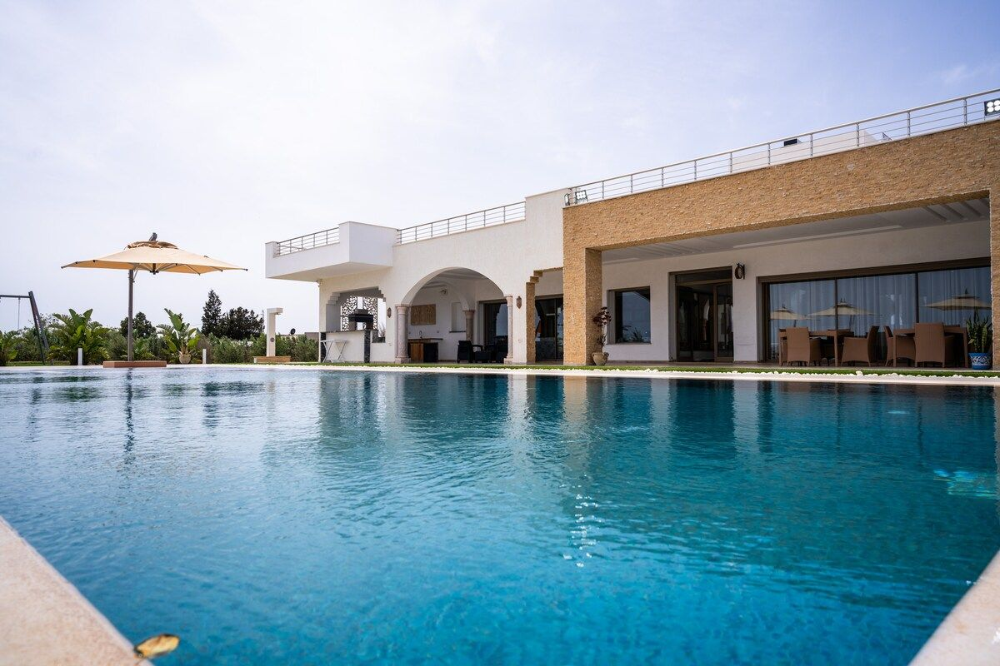
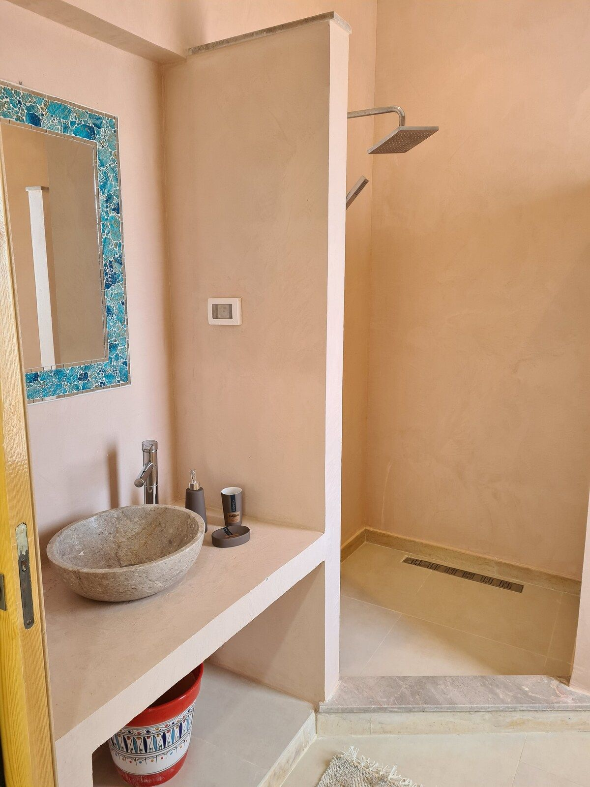
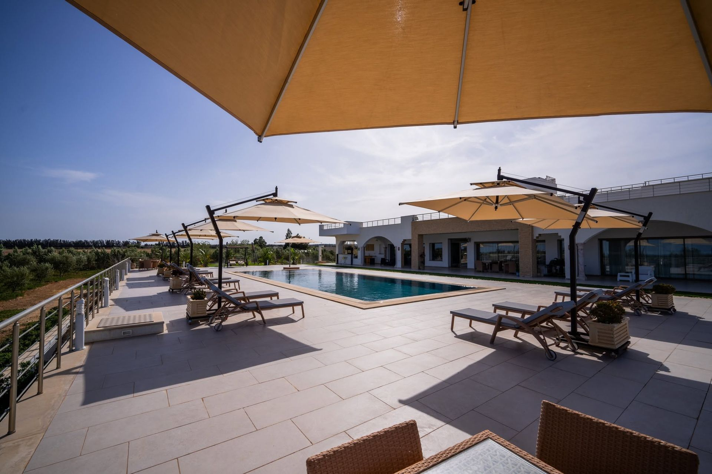

Maison d'hôtes & location saisonnière au Cap Bon, à Tazarka
Dar Aïcha se réserve à la suite en maison d'hôtes le reste de l'année, ou en totalité pour la haute saison — une villa de 9 suites entre Nabeul et Korba, gouvernorat du Cap Bon.
Maison d'hôtes en basse saison, location saisonnière en haute saison
De juin à septembre, Dar Aïcha se réserve en location saisonnière exclusive — toute la villa pour votre groupe. En basse saison, la villa fonctionne en maison d'hôtes : réservez une ou plusieurs suites, avec accès aux espaces communs.
Maison d'hôtes (basse saison)
Réservation à la suite, à partir de 255 TND la nuit (≈ 75 €). Accès aux salons, à la cuisine extérieure, au patio et à la piscine.
Location saisonnière (haute saison)
Privatisation complète des 9 suites, juin à septembre, jusqu'à 25 personnes — tarif direct sur devis, sans commission de plateforme.
Contact & arrivée
Arrivée à partir de 15h, départ à 11h. Contact sur place : Fatma, hôte de la maison — +216 58 989 830.

Une adresse rare au Cap Bon
Contrairement à un hôtel standard, Dar Aïcha offre l'intimité d'une grande maison privée : 9 suites climatisées, des espaces communs généreux (cuisine extérieure, salons majlis, patio), une piscine à débordement et 4 hectares de jardins et d'oliveraie, à quelques minutes des plages de Nabeul et Maamoura.
- Suites climatisées avec salle de bain privative
- Piscine à débordement, jardins et oliveraie de 4 hectares
- Proche des plages de Nabeul et Maamoura, au Cap Bon
- Accueil personnalisé par Fatma, hôte de la maison
L'ambiance d'un séjour à Dar Aïcha






La confiance de nos voyageurs
Vérifiez les disponibilités pour votre séjour
Une suite, un groupe d'amis ou toute la villa — décrivez votre projet, nous revenons vers vous rapidement par WhatsApp ou e-mail.